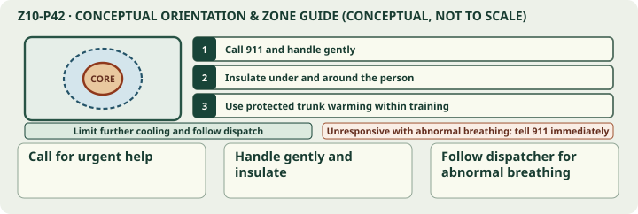

Z10-P42 · Wilderness medicine · Adapted historical material
Handle moderate-to-severe hypothermia gently and protect core warmth
Stabilize a confused, drowsy, or non-shivering hypothermic patient without triggering fatal cardiac arrest during movement.
When it applies · Cold-exposed patient exhibiting confusion, slurred speech, stumbling, drowsiness, unresponsiveness, or stopped shivering while still cold.
Equipment · Thick ground insulation, dry vapor-barrier/sleeping-bag wrap, gentle warm packs wrapped in cloth (trunk only), and emergency comms.

Actions
- Activate 911/SAR immediately and treat the patient as critically fragile—keep them HORIZONTAL and handle them extremely gently (no vigorous rubbing, rough standing, or sudden jostling, which can trigger lethal heart arrhythmias in a cold heart).[T03, M23, T02]
- Protect from all further heat loss by cutting away wet clothing gently if inside shelter, placing thick insulation underneath and all around the body (hypothermia wrap), and covering the head and neck.[M23, E05]
- Keep insulation in place and use protected trunk warming within your training. Withhold oral fluids if alertness is impaired. If the person does not respond or breathe normally, activate 911 and follow dispatcher advice without inserting a fixed lay waiting period.[M23, M03, T03]
Failure recognition · Forcing a confused, non-shivering hypothermic victim to stand up and walk, or dunking their limbs in hot water.[T03, M23]
Verify · Confirm patient stays horizontal, wrapped against ground/wind loss, zero oral fluids given while altered, and urgent EMS transport is active.[M23, T02]
Stop or change course · Unresponsiveness with absent normal breathing triggers immediate dispatcher-guided CPR and continuous evacuation until hospital rewarming.[M23, M03]
Evidence and editorial notes
- E05 · NWS · What To Do If You're Caught in a Winter Storm (current web edition)
- Section: Outside and find shelter · Conditions: Cold, wet or windy winter conditions
Support: Block wind, stay dry and keep off cold ground. Keep exposure reduction separate from making a fire.
Limitations: Improvised windbreaks do not provide rated thermal protection or snow-load capacity. · Conflicting evidence: None; aligns with CDC-H.
Editorial note: Separates wind, ground, and moisture heat-loss pathways. · Specialist reviewer: Cold-weather shelter specialist
Primary source · checked 2026-11-24 - M03 · American Heart Association · 2025 Adult Basic Life Support (2025)
- Section: Figure 2 Adult Basic Life Support Algorithm for Lay Rescuers; 6.1 Recognition of Cardiac Arrest · Conditions: Unresponsive adult with absent or abnormal breathing; early dispatch and AED access
Support: Recognize gasps as abnormal, activate EMS, start CPR and use an AED promptly. Follow prompts and resume after analysis or shock.
Limitations: Pediatric and drowning arrest require their own training or dispatch prompts; the adult cardiac-arrest algorithm is not all-age guidance. · Conflicting evidence: See A02 claim audit for boundaries.
Editorial note: Distinguishes lay activation and dispatcher-guided CPR from advanced life support. · Specialist reviewer: EMS and resuscitation specialist
Primary source · checked 2026-11-25 - M23 · CDC · Preventing Hypothermia (current web edition)
- Section: What to do; emergency response · Conditions: Suspected hypothermia or cold-related altered alertness
Support: Seek emergency help, handle gently, prevent further cooling and warm the body core within training.
Limitations: No fixed lay delay before calling or following dispatch on CPR. Separate expert protocols require temperature, pulse and training context. · Conflicting evidence: See A02 claim audit for boundaries.
Editorial note: Links Z10 clinical cold care with Z12 environmental prevention. · Specialist reviewer: Wilderness medicine and cold-injury EMS
Primary source · checked 2026-11-24 - T02 · American Red Cross · First Aid Steps (current web edition)
- Section: First Aid Steps > Call 9-1-1 · Conditions: Lay emergency response to unresponsiveness, abnormal breathing or severe bleeding
Support: Activate EMS and get needed equipment. Follow dispatcher directions and act within training.
Limitations: Remote locations may delay EMS arrival, requiring sustained stabilization after activation. · Conflicting evidence: None; aligns with NPS-E.
Editorial note: Mandates early emergency activation and dispatcher adherence. · Specialist reviewer: EMS and wilderness medicine
Primary source · checked 2026-11-24 - T03 · CDC · Preventing Hypothermia (current web edition)
- Section: Warning signs; What to do · Conditions: Cold exposure and suspected hypothermia
Support: Confusion, slurred speech and drowsiness are warning signs. Obtain medical attention and protect from further cold.
Limitations: Shivering may stop as hypothermia worsens; absence of shivering is not reassurance. · Conflicting evidence: None; aligns with WMS cold guidelines.
Editorial note: Core neurological red-flag trigger for stopping activity and calling rescue. · Specialist reviewer: Wilderness medicine
Primary source · checked 2026-11-24
Source lineage · B012-P08 severe hypothermia and CDC Preventing Hypothermia; adapted historical material · Classification · Adapted historical material.